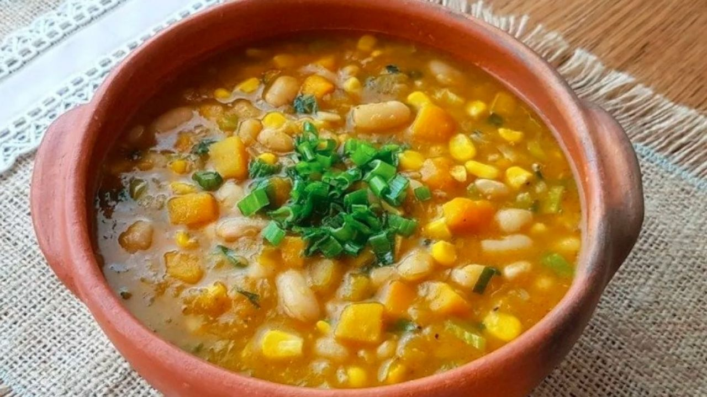

Locro, a traditional Argentine dish.

Here you have one of several traditional dishes in Argentina (my country).
Locro (from the Quechua ruqru) is a hearty thick squash stew, associated with
Native Andean civilizations, and popular along the Andes mountain range.
It is one of the national dishes of Peru, Bolivia, Ecuador, Chile, Paraguay,
Northwest Argentina and Southwestern Colombia.
Ingredients:
- 2 cups dried, broken hominy
- 1 cup dried lima beans
- 1 cup dried chickpeas
- 3⁄4 cup olive oil
- 1 1⁄2 tsp. sweet paprika
- ⁄2 tsp. crushed red chile flakes
- 8 cloves garlic, minced
- 1 lb. veal shoulder, cut into 1″ pieces
- 1 lb. pork shoulder, cut into 1″ pieces
- Kosher salt and freshly ground black pepper, to taste
- 10 oz. cured chorizo, cut into 1/2″ slices
- 1 large yellow onion, minced
- 1 tbsp. tomato paste
- 1 tsp. dried oregano
- 1⁄2 tsp. ground cumin
- bay leaf
- 1 small acorn squash, peeled, seeded and finely chopped
- Juice of 1 lemon
- 1 cup finely chopped scallions
Steps for cooking Locro.
- Rinse hominy under running water until water runs clear.
- Place in a bowl with limas and chickpeas.Cover with water, and soak at least 8 hours or overnight.
- Drain. Whisk 1⁄2 cup oil, paprika, chile flakes, and 1⁄4 of the garlic in a bowl.
- Set sauce aside. Heat remaining oil in an 8-qt. saucepan over medium-high heat. Season veal and pork with salt and pepper.
- Working in batches, add to pan, and cook, turning, until browned all over, about 5 minutes. Transfer to a plate. Add chorizo.
- Cook until fat renders, about 2 minutes. Add remaining garlic and onion.
- Cook until soft, about 3 minutes. Add tomato paste, oregano, cumin, and bay leaf.
- Cook for 2 minutes. Return meat to pan with hominy, beans, chickpeas, squash, and 10 cups water.
- Boil. Reduce heat to medium-low.
- Cook until hominy and beans are tender, about 2 hours. Stir in juice.
- Season with salt and pepper. Divide among bowls.
- Drizzle with sauce. Sprinkle with scallions.
-----------------------------------------------------------------------------------------------------------
- Source:
-
- https://www.saveur.com/article/Recipes/Classic-Locro-Hominy-Stew/
-----------------------------------------------------------------------------------------------------------